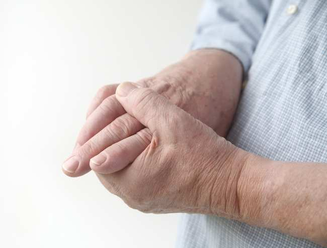

ASAM URAT
Penyakit asam urat atau gout adalah kondisi yang dapat menyebabkan gejala nyeri yang tidak tertahankan, pembengkakan, dan rasa panas di persendian. Meski semua sendi di tubuh bisa terkena asam urat, namun yang paling sering terserang adalah sendi jari tangan, lutut, pergelangan kaki, dan jari kaki.
Laki-laki lebih rawan terkena penyakit asam urat dibandingkan dengan perempuan, terutama saat usia mereka di atas 30 tahun. Pada perempuan, penyakit ini biasanya berisiko timbul setelah menopause.
Orang yang terkena serangan penyakit asam urat biasanya akan merasakan perkembangan gejala yang cepat dalam beberapa jam pertama. Rasa sakit bisa berlangsung selama 3-10 hari. Pembengkakan tidak hanya terjadi di sendi, namun juga di daerah sekitar sendi disertai warna kulit yang memerah. Pada tahap ini, penderita dapat tidak mampu bergerak secara leluasa.

Di Indonesia, orang sering salah kaprah menyamakan penyakit asam urat (gout/pirai) dengan rematik. Padahal rematik adalah istilah umum yang dipakai untuk menggambarkan rasa sakit pada persendian atau otot yang mengalami peradangan. Penyakit asam urat (gout/pirai) hanya salah satu penyebab nyeri pada persendian. Mengenali gejala dan tanda pada gout dapat membantu seseorang membedakan dengan nyeri sendi yang disebabkan oleh kondisi lain.
Banyak orang mengira apabila kadar asam urat di dalam darah tinggi (hiperurisemia), maka akan terkena gout. Hal ini tidak benar, karena hanya sekitar 1/3 penderita hiperurisemia yang mengalami gout.
Gejala nyeri dan pembengkakan pada penyakit asam urat disebabkan oleh tusukan kristal-kristal tajam di sekitar sendi yang terbentuk akibat penumpukan zat asam urat. Seseorang yang suka mengonsumsi makanan dengan kandungan asam urat tinggi (contohnya jeroan, hidangan laut, daging merah) dan seseorang yang gemar mengonsumsi minuman beralkohol akan berisiko tinggi terkena penyakit asam urat. Selain itu, penyakit ini juga rawan dialami oleh orang-orang yang menderita obesitas, diabetes, hipertensi, atau penyakit ginjal kronik.
Menurut penelitian, seseorang yang memiliki keluarga penderita penyakit asam urat juga dapat terkena kondisi sama. Dengan kata lain, penyakit ini bersifat genetik juga.
Temuilah dokter jika Anda merasakan gejala-gejala penyakit asam urat. Dalam melakukan diagnosis, dokter akan melakukan pemeriksaan atau tes untuk memastikan adanya kristal-kristal natrium urat pada persendian. Hal ini perlu dilakukan karena ada jenis penyakit lain yang bisa menyebabkan gejala menyerupai penyakit asam urat. Pemeriksaan kadar asam urat dalam darah juga biasanya dilakukan.
Sebelum melakukan tes, biasanya pertama-tama dokter akan bertanya mengenai:
Penanganan penyakit asam urat memiliki dua sasaran utama, yaitu meringankan gejalanya dan mencegah serangan terulang kembali.
Untuk meringankan gejala penyakit asam urat, Anda bisa menempelkan kantong es pada bagian sendi yang terasa sakit. Anda juga bisa mengonsumsi obat pereda rasa sakit, misalnya colchicine, OAINS (obat anti-inflamasi nonsteroid), dan obat-obatan golongan steroid.
Sedangkan untuk mencegah kambuhnya serangan penyakit asam urat, Anda bisa mengonsumsi obat penurun kadar asam urat (misalnya allopurinol). Selain itu, Anda diharuskan untuk menjauhi makanan-makanan pemicu penyakit asam urat dan segera turunkan berat badan. Utamakan makanan rendah kalori untuk mendukung upaya mendapatkan berat badan ideal.
Kombinasi obat-obatan dari dokter serta perilaku hidup sehat umumnya terbukti ampuh dalam menurunkan kadar asam urat dan melarutkan kristal-kristal tajam yang telah terbentuk. Dengan kombinasi tersebut, maka diharapkan pasien penyakit asam urat tidak lagi mengalami kambuh.
Meski penyakit asam urat jarang menimbulkan komplikasi, namun tetap patut kita waspadai. Beberapa komplikasi yang mungkin terjadi, di antaranya: